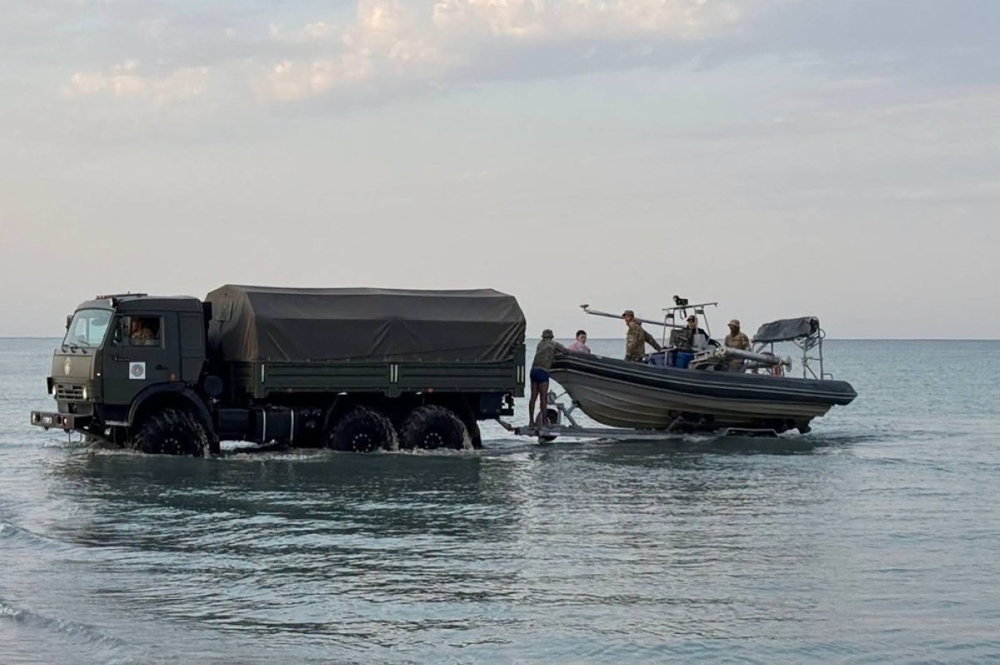
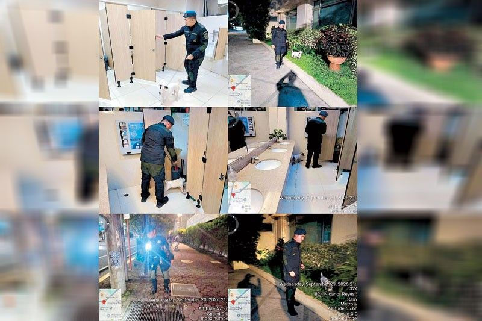

Saudi Arabia intercepts Houthi missiles; France to shield Yanbu
25–26 Sep 2026
AFP / Manila Times: Saudi Civil Defense warned Mecca, Yanbu, Taif, Jeddah, and Tabuk as ballistic missiles and drones were intercepted Thursday. French President Emmanuel Macron said France would send soldiers, radars, and defense systems to protect the Yanbu oil terminal. Ground fighting in Yemen killed about 150 on both sides in 24 hours; clashes near Bab al-Mandab continue after the July truce collapse.
Open Manila Times
Shehbaz at UN: diverting Pakistan’s Indus share is an act of war
26 Sep 2026
Radio Pakistan / UNGA: Prime Minister Shehbaz Sharif told the 81st Assembly that India’s holding the Indus Waters Treaty in abeyance has no legal basis, and any attempt to stop, impede, or divert Pakistan’s share will be treated as an act of war. He also condemned Houthi attacks near Makkah, called Hormuz and Bab al-Mandab arteries that must stay open, and urged action over Israel’s operations in Lebanon and Syria.
Open Radio Pakistan
New Mexico jury: Facebook deceived users on privacy protections
26 Sep 2026
AP / Manila Times: A Santa Fe jury found Meta’s Facebook liable for deceiving users about data protections tied to the Cambridge Analytica-era quiz breach (~87 million profiles) and about probes of third-party apps — over 43 million consumer-law violations. Penalty size is for the judge (state seeks up to $5,000 per count). Meta said it disagrees and will keep defending; jurors did not find false claims on COVID-content removal.
Open Manila Times
Trump: Iran war unlikely to end before US midterms
25 Sep 2026
BBC / Reuters desk: After a UN week of thin diplomatic breakthroughs, President Trump said the Iran conflict will not end until after the Nov. 3 midterms. Polls put his approval near 32% as fuel and grocery costs tied to the war weigh on Republicans. Separately, Zelenskyy said Washington has floated a trilateral meeting with Ukraine and Russia in the UAE — still a proposal, not a scheduled summit.
Open BBC

Kazakhstan naval drill: 14 dead after sudden Caspian weather
25–26 Sep 2026
AFP / Manila Times: Seventeen personnel were swept to sea during a combat training exercise off western Mangystau on Thursday when weather deteriorated; three were rescued and 14 died. President Kassym-Jomart Tokayev ordered a government commission; a criminal investigation is open. Search and rescue has concluded.
Open Manila Times

Bomb threats hit FEU and QC school; campuses cleared, no devices
24–25 Sep 2026
Philstar: Threats forced suspensions at FEU Manila (Morayta) and Alabang, Don A. Roces High School in Quezon City, and a Biliran public high school — in the wake of the Banga, South Cotabato shooting and earlier Zamboanga and Tacloban cases. Manila and Muntinlupa police found no explosives after EOD and canine sweeps; classes resumed with heavier gate checks. Parent ask: treat social-media threat posts as real until cleared, and keep kids’ reporting channels open.
Open Philstar
Bullying: DepEd Order 006 steps for students and parents
15–16 Sep 2026 (live desk)
PhilSTAR Life / Newsline: Under DepEd Order No. 006 s. 2026, anyone who sees bullying should file with the school disciplining authority; anonymous channels must exist, but punishment needs more than anonymity alone. Fact-finding targets findings to the school head within 10 days; accused students get written notice and a chance to answer; appeals run 15 days. Parent pack: preserve screenshots, report to platform and CPC, ask what interim safety steps apply while the case runs.
Open PhilSTAR Life
Pinoy athletes
Asiad Fri: Carlos vault gold #2, Eldrew HB bronze, Gilas Women silver, Men 4th.
Asiad Nagoya Fri: Yulo vault gold, Eldrew bronze, Gilas Women silver
25 Sep 2026
GMA / Olympics.com / Spin: Carlos Yulo won men’s vault (14.599) — PH’s second gold of Aichi-Nagoya after Thursday’s floor — then finished fourth on parallel bars (14.300). Karl Eldrew took horizontal-bar bronze (13.666), his first Asiad medal. Gilas Women 3×3 fell to Japan 21-11 in the gold final for silver (best PH Asiad 3×3 finish). Gilas Men lost the bronze game to Iran 21-10 after a semis beatdown by Korea. PH medal stack after Friday: 2 gold, 2 silver, 5 bronze.
Open GMA
Carlos Yulo: vault seals Asiad double; Worlds next
25–26 Sep 2026
Manila Times / Olympics.com: Fresh off floor gold, Yulo averaged 14.599 on vault (first vault 14.733 with 5.6 difficulty) over Iran’s Mahdi Olfati and Hong Kong’s Ka Ki Ng. He called the week satisfying after a slow start and said lessons go to the upcoming World Championships. Eldrew cried before the HB awarding: “Para sa atin ito.”
Open Manila Times
Gilas Women 3×3 take Asiad silver; Men finish fourth
25 Sep 2026
Spin / PNA: The U23 women’s side beat Thailand in the semis then dropped the final to host Japan 21-11 for silver — PH’s best Asiad 3×3 result since the sport debuted. Men’s bronze hope ended 21-10 vs Iran after a 21-9 semis loss to Korea. Squad notes: Kacey Dela Rosa, Amyah Espanol, and teammates carried the women’s run.
Open Spin
Starship Flight 14 still NET Sep 28 after Thursday WDR
24–25 Sep 2026
Space.com / KeepTrack: Full-stack wet dress on Pad 2 (Booster 21 / Ship 41) is complete. Public target remains Monday 28 Sep, window opening 8:15 a.m. EDT (~8:15 p.m. PH), ~75 minutes, pending license — profile ~six orbits, 26 Starlink V3, Pacific splashdown, Super Heavy Gulf landing. Gate is still regulatory approval, weather, and range.
Open Space.com